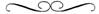

“Câu đáp dịu dàng làm nguôi cơn giận”
Thánh Kinh Cựu Ước, Châm ngôn, 15:1

Nàng cố gắng ngồi dậy, nhăn mặt chịu đựng cơn đau do cử động gây ra và rồi nàng nhớ lại tất cả.
Ôi Chúa ơi, nàng thấy thật khủng khiếp. Mọi cơ bắp trên người nàng đều đau nhức. Madelyne cảm giác như ai đó thọc gậy vào lưng và áp cái bàn ủi nóng lên một bên chân nàng. Dạ dày nàng réo ầm ầm nhưng nàng không muốn ăn gì hết. Không, nàng chỉ khát nước kinh khủng và nóng rực cả người. Tất cả những gì nàng muốn là xé toạc áo xống và đứng trước cửa sổ đang mở.
Ý tưởng đó có vẻ rất tuyệt vời. Nàng cố gắng rời khỏi giường để mở cánh cửa chớp, nhưng nàng yếu đến mức thậm chí không để đẩy những tấm đắp ra khỏi người. Nàng cứ tiếp tục cố gắng cho đến khi nhận ra nàng hiện không mặc đồ của mình. Ai đó đã thay đồ cho nàng, và nàng thì tuyệt đối không nhớ gì về việc đó.
Madelyne đang mặc một chiếc áo sơ mi bằng vải cotton trắng, chắc chắn là một cái áo không đứng đắn vì nó chỉ vừa phủ tới đầu gối nàng. Tay áo thì quá dài. Khi nàng cố xắn cổ tay áo lên, nàng nhớ ra nàng đã thấy chiếc áo này trước đây. Sao nhỉ, nó là áo đàn ông, và cái phần vai áo cực kỳ rộng rõ ràng là thuộc về Duncan. Nó giống nhau; Duncan đã mặc chính cái áo này khi hắn ngủ cạnh nàng trong căn lều vào cái đêm trước… hay là hai đêm trước? Madelyne buồn ngủ đến nỗi không thể nhớ nổi. Nàng quyết định nhắm mắt lại vài phút để suy nghĩ về điều đó.
Nàng có giấc mơ bình yên nhất. Madelyne trở lại tuổi mười một và sống cùng người cậu thân yêu của nàng, Cha Berton. Cha Robert và Cha Samuel đến trang viên Grinsteade để thăm cậu nàng và chào hỏi ông lão già Morton, chủ trang viên Grinsteade. Trừ những tá điền đang làm việc trong lãnh địa nhỏ của Nam tước Morton ra, Madelyne là người trẻ tuổi duy nhất ở nơi đó. Nàng được bao bọc bởi những người đàn ông dịu dàng, tốt bụng và tất cả đủ già để làm ông của nàng. Cả Cha Robert lẫn Cha Samuel đều đến từ tu viện Claremont đông đúc. Ngài Morton đã cho họ nơi tá túc thường trú. Ông lão hoàn toàn thích những người bạn của Cha Berton. Cả hai đều là những cờ thủ xuất sắc và luôn lắng nghe Nam tước kể lại những câu chuyện trong quá khứ mà ông ưa thích. Ông già lẩm cẩm ấy rất yêu thương Madelyne vì ông tin rằng nàng là một đứa trẻ tài năng nhất. Họ lần lượt dạy nàng đọc và viết, và giấc mơ của Madelyne tập trung vào một buổi tối yên tĩnh đặc biệt. Nàng ngồi ở bàn và đọc cho “những người cậu” nghe những tác phẩm mà nàng đã viết lại. Ngọn lửa bập bùng sáng rực trong lò sưởi và không khí trong căn phòng thật ấm áp, tĩnh lặng. Madelyne đang kể lại một câu chuyện phi thường, những cuộc phiêu lưu của người anh hùng mà nàng yêu mến, Odysseus. Người chiến binh hùng mạnh mang theo nụ cười của nàng khi nàng thuật lại những chi tiết tuyệt vời trong chuyến hành trình dài của chàng.
Lần kế tiếp nàng thức giấc và chắc chắn chỉ vài phút trôi qua từ lúc nàng quyết định nghỉ ngơi một chút, Madelyne nhận ra ngay ai đó thật sự đã khóa chặt mí mắt nàng lại. “Sao dám đối xử với tôi theo kiểu này chứ?” Nàng lầm bầm giận dữ, không hướng đến ai cả.
Dải băng trên mắt nàng ươn ướt. Madelyne xé toạc sự khó chịu bằng lời lầm bầm rất nông dân. Kỳ lạ, nhưng nàng nghe thấy ai đó cười to. Nàng cố gắng tập trung vào âm thanh khi tâm trí nàng quay trở lại. Chết tiệt nếu cái dải băng khác không áp lên trán nàng. Chẳng có chút nghĩa lý gì. Chẳng phải nàng vừa mới quẳng nó ra sao? Nàng lắc đầu trong rối rắm.
Ai đó nói chuyện với nàng nhưng nàng không thể hiểu anh ta nói gì. Nếu anh ta ngưng thì thầm và thôi lựa chọn từng từ thì nó sẽ dễ dàng hơn rất nhiều. Nàng nghĩ bất cứ ai đang nói với nàng thật sự rất thô lỗ và hét toáng lên suy nghĩ đó.
Madelyne thốt nhiên nhớ nàng cảm thấy nóng đến thế nào khi tấm đắp khác đè nặng xuống vai nàng. Nàng biết nàng phải đến cửa sổ và hít một chút không khí lạnh ngoài kia. Đó là thứ duy nhất giúp nàng thoát khỏi sức nóng này. Tại sao à, nếu không biết nàng sẽ nghĩ nàng đang ở lò lửa địa ngục. Nhưng nàng là cô gái ngoan và điều ấy không thể là sự thật. Không, nàng sẽ lên thiên đường, chết tiệt nếu nàng không được ở đó.
Tại sao nàng không thể mở mắt? Nàng cảm nhận ai đó đỡ vai nàng lên và rồi một dòng nước mát chạm vào đôi môi khô ran của nàng. Madelyne cố nuốt một hơi dài nhưng làn nước đột ngột biến mất sau khi nàng vừa nhấp môi được một ngụm nhỏ xíu xiu. Ai đó đã giở trò mánh khóe độc ác, nàng cho là vậy, cau mày dữ dội khi nàng nhận ra.
Bất thình lình, mọi thứ trở nên trong suốt như pha lê. Tại sao ư, nàng đang ở Hades, phó mặc cho tất cả bọn quái vật và ác quỷ mặc sức lừa phỉnh Odysseus. Bây giờ chúng đang cố lừa phỉnh nàng. Được thôi, nàng tự nhủ, nàng không có gì cả. Suy nghĩ về lũ ác quỷ này không làm Madelyne thất vọng chút nào.
Hoàn toàn ngược lại. Nàng trở nên giận dữ. Cậu nàng đã nói dối nàng. Những câu chuyện về Odysseus không phải là điều tin tưởng sai lầm hay là huyền thoại truyền từ đời này sang đời khác. Lũ quái vật có tồn tại. Nàng có thể cảm thấy chúng đang lượn lờ xung quanh nàng, chỉ chờ nàng mở mắt.
Và bây giờ Odysseus ở đâu? Nàng cần được biết. Sao chàng dám để nàng một mình chiến đấu với bọn ác quỷ cơ chứ? Chàng không hiểu chàng phải làm gì ư? Không ai nói cho chàng về những chiến công của chàng sao?
Madelyne cảm thấy ai đó chạm vào đùi nàng, cắt ngang luồng suy nghĩ nóng nảy. Nàng rút dải băng mới phủ trên mắt nàng và quay đầu lại đúng lúc để xem ai đang quỳ bên cạnh giường nàng. Rồi nàng thét lên, một phản xạ tự nhiên với gã khổng lồ một mắt khủng khiếp đang nhìn nàng với nụ cười giả tạo trên khuôn mặt méo mó của hắn, và sau đó nàng nhớ là nàng giận dữ, không phải sợ hãi. Hắn chỉ là một trong số những tên khổng lồ một mắt, thậm chí có thể là tên đầu đàn, Polyphemus, kẻ đáng khinh nhất trong số chúng và quyết tâm có được nàng nếu nàng cho phép hắn.
Madelyne nắm tay lại và tung một quả đấm vào tên khổng lồ. Nàng nhằm vào mũi hắn nhưng bị trượt một hai inch, tuy nhiên như vậy cũng đủ làm hài lòng. Hành động ấy khiến nàng kiệt sức và nàng ngã xuống giường, đột nhiên yếu ớt như một chú mèo con. Dù thế có một nét cười tự mãn hiện hữu trên khuôn mặt nàng vì nàng nghe thấy Polyphemus gào lên đau đớn.
Madelyne xoay đầu tránh xa khỏi tên khổng lồ một mắt, quyết định lờ đi con quái vật đang thọc vào đùi nàng. Nàng nhìn quanh lò sưởi. Và rồi nàng thấy chàng. Chàng đang đứng ngay trước ngọn lửa, với luồng ánh sáng sáng ngời bao quanh cơ thể rất đẹp của chàng. Chàng to lớn hơn nhiều so với những gì nàng hình dung về chàng, và hấp dẫn hơn rất nhiều. Chàng không chết, nàng cố nhắc nhở bản thân. Nàng chắc rằng đó là sự thật vì tầm vóc khổng lồ của chàng và ánh sáng huyền bí rực rỡ xung quanh chàng. “Chàng đã ở đâu thế?” nàng hét lên để chàng chú ý đến nàng.
Madelyne không rõ liệu người chiến binh thần thoại có thể nói chuyện với người thường hay không, nàng nhanh chóng phỏng đoán có thể không hoặc sẽ không vì chàng vẫn đứng đó và chăm chú nhìn nàng, và không đáp lại lấy một lời.
Nàng cố thử lại, dù nàng biết đó là một việc cực kỳ khó khăn. Có một tên khổng lồ một mắt ngay cạnh nàng, và thậm chí nếu người chiến binh không thể nói với nàng thì chàng vẫn có thể thấy được nhiệm vụ cần hoàn thành. “Tiếp tục đi, Odysseus,” Madelyne yêu cầu, chỉ ngón tay vào tên quái vật đang quỳ bên cạnh nàng.
Khốn kiếp, chàng vẫn đứng đó và trông bối rối. Chàng có vẻ không thông minh lắm với vóc người và khả năng của chàng. “Tôi phải tự mình chiến đấu trong mỗi cuộc chiến sao?” nàng cao giọng đến mức những múi cơ ở cổ nàng căng lên đau nhức. Những giọt nước mắt thất vọng che mờ tầm nhìn của nàng nhưng nàng để mặc. Odysseus đang cố biến mất vào luồng sáng. Chàng thật bất lịch sự làm sao, nàng nghĩ.
Nàng không thể cho phép chàng biến mất. Chậm hiểu hay không thì chàng là tất cả những gì nàng có. Madelyne cố xoa dịu chàng. “Ta hứa tha thứ cho những lần chàng để Louddon làm đau ta, nhưng ta sẽ không tha thứ nếu chàng để ta một mình cô độc bây giờ.”
Odysseus không có vẻ quá lo ngại với việc được nàng tha thứ. Nàng dường như không thấy chàng nữa, biết chàng sắp ra đi, và nhận ra nàng phải tăng cường đe dọa chàng nếu nàng muốn chàng giúp đỡ.
“Nếu chàng rời khỏi ta, Odysseus, ta sẽ sai người dạy cho chàng một bài học. Đúng thế,” nàng nói thêm, tỏ rõ vẻ đe dọa. “Ta sẽ đưa người chiến binh đáng sợ nhất đến. Cứ đi đi và hãy xem chuyện gì xảy ra! Nếu chàng không tống khứ hắn ta,” nàng tuyên bố, ngừng lại một hồi để chỉ vào tên khổng lồ một mắt, “Ta sẽ sai Duncan đuổi theo chàng.”
Madelyne quá hài lòng với bản thân, nàng nhắm mắt và thở ra. Nàng chắc chắn đã đưa nỗi sợ đến với Odysseus hùng mạnh bằng cách giả vờ sai Duncan đuổi theo chàng. Nàng bật ra tiếng khịt mũi thiếu trang nhã vì sự lanh lợi của mình.
Nàng trộm nhìn qua đuôi mắt để xem sự de dọa của nàng có hiệu quả ra sao và mỉm cười chiến thắng. Odysseus trông có vẻ lo lắng. Và, Madelyne đột nhiên quyết định, chưa đủ tốt. Nếu chàng sắp chiến đấu với tên khổng lồ một mắt thì chàng cần phải khá hơn và giận dữ nữa. “Duncan thật sự là một con sói, chàng biết mà, và anh ta sẽ xé xác chàng ra thành từng mảnh nếu ta bảo anh ta làm thế,” nàng kiêu hãnh. “Anh ta sẽ làm tất cả mọi thứ mà ta yêu cầu,” nàng thêm vào, “Thật đấy.” Madelyne cố búng các ngón tay kêu tách tách nhưng cảm thấy không được điêu luyện cho lắm.
Nàng lại nhắm mắt, cảm giác như vừa chiến thắng trong một trận đánh quan trọng. Và với tất cả những từ ngữ dịu dàng, nàng nhắc nhở bản thân. Nàng không hề dùng chút vũ lực nào. “Tôi mãi là một thiếu nữ dịu dàng,” nàng hét to. “Chết tiệt nếu tôi không phải.”
Suốt 3 ngày 3 đêm Madelyne chiến đấu với lũ quái vật thần thoại xuất hiện và cố chộp lấy nàng khỏi Hades. Odysseus lúc nào cũng ở đó, bên cạnh nàng, giúp nàng tránh mỗi cuộc tấn công khi nàng cần.
Có đôi khi kẻ khổng lồ bướng bỉnh nói chuyện với nàng. Chàng thích hỏi về quá khứ của nàng và khi nàng hiểu những gì chàng hỏi, nàng lập tức trả lời. Odysseus dường như quan tâm nhất là khoảng thời gian tuổi thơ của nàng. Chàng muốn nàng kể hết những gì xảy ra sau khi mẹ nàng qua đời và Louddon tiếp quản vai trò là người giám hộ nàng.
Nàng ghét phải trả lời những câu hỏi như thế. Nàng chỉ muốn kể về cuộc sống hạnh phúc với Cha Berton. Nhưng nàng cũng không muốn Odysseus giận dữ và bỏ rơi nàng. Vì vậy nàng chịu đựng suốt cuộc chất vấn nhẹ nhàng của chàng. “Ta không muốn nói về anh ấy.” Duncan khó chịu bởi cơn bùng nổ kịch liệt của Madelyne. Hắn không biết tại sao lại như vậy và bước vội đến giường nàng. Hắn ngồi xuống cạnh Madelyne và giữ lấy nàng trong vòng tay hắn. “Yên nào,” hắn thầm thì. “Ngủ đi, Madelyne.”
“Khi anh ấy đưa ta rời khỏi nhà Cha Berton, anh ấy rất đáng sợ. Anh ấy lẻn vào phòng ta mỗi đêm. Anh ấy chỉ đứng đó, ngay chân giường. Ta có thể cảm thấy anh ấy chằm chằm nhìn ta. Ta nghĩ nếu ta mở mắt… Ta sợ lắm.”
“Đừng nghĩ về Louddon nữa,” Duncan nói. Hắn duỗi thẳng người trên giường ngay khi nàng bắt đầu khóc và kéo nàng vào trong đôi tay hắn.
Dù hắn đã cẩn thận che giấu phản ứng nhưng bên trong hắn đang run lên giận dữ. Hắn biết Madelyne không nhận thức điều nàng kể cho hắn nghe nhưng hắn đủ khả năng nhận thức điều ấy. Được hắn vỗ về êm ái, Madelyne lại chìm vào giấc ngủ. Tuy nhiên nàng không nghỉ ngơi được lâu, và nàng thức giấc thấy Odysseus vẫn ở đấy, thức canh nàng. Nàng không lo sợ khi chàng ở cạnh nàng. Odysseus là chiến binh tuyệt vời nhất. Chàng mạnh mẽ, ngạo mạn, dù nàng không đổ lỗi cho chàng về những khiếm khuyết đó vì chàng đã lấp đầy chúng bằng một trái tim nhân hậu.
Chàng cũng là kẻ đầy láu lỉnh. Trò chơi yêu thích của chàng là thay đổi diện mạo. Nó xảy ra quá nhanh, thậm chí Madelyne không có thời gian để mà ngạc nhiên nữa. Trong một phút chàng giả vờ là Duncan và phút kế tiếp chàng trở lại là Odysseus. Và một lần, trong thời khắc đen tối của buổi đêm, khi Madelyne sợ hãi nhất, chàng biến đổi thành Achilles, chỉ để làm nàng vui. Chàng ngồi đó, trên chiếc ghế gỗ có tấm dựa sau lưng có vẻ quá nhỏ so với vóc dáng thân hình chàng, chỉ nhìn nàng bằng ánh mắt khác lạ nhất.
Achilles không đi ủng. Điều ấy làm nàng lo lắng và nàng lập tức cảnh báo chàng để chàng bảo vệ gót chân chàng khỏi bị tổn thương. Achilles có vẻ bối rối khi nàng đề nghị, buộc Madelyne phải nhắc cho chàng nhớ việc mẹ chàng đã nhúng chàng vào dòng nước kỳ diệu của Styx, khiến cho cơ thể chàng bất khả xâm phạm, nhưng lại quên không nhúng phần gót chân của chàng vào dòng nước, nơi bà đã giữ để chàng không bị kéo vào vùng nước xoáy.
“Nước không chạm vào gót chân của chàng và đó chính là nơi chàng không được bảo vệ,” nàng căn dặn chàng. “Chàng hiểu ý ta không?”
Nàng nghĩ chàng không hiểu gì hết. Cái nhìn thắc mắc của chàng còn nói cho nàng biết nhiều hơn thế. Có lẽ mẹ chàng đã không kể cho chàng nghe. Madelyne thở dài và trao cho chàng một ánh mắt buồn bã, thương cảm. Nàng biết điều gì sẽ xảy ra với Achilles, nhưng không dám nói chàng coi chừng những mũi tên bay lạc. Nàng đoán chàng sẽ tìm hiểu ra sớm thôi.
Madelyne bắt đầu rơi nước mắt vì tương lai đen tối của Achilles khi chàng thốt nhiên đứng dậy và đi đến chỗ nàng. Nhưng giờ chàng không phải là Achilles. Không, là Duncan ôm lấy nàng và dỗ dành nàng. Kỳ lạ, nhưng sự đụng chạm của hắn lại rất giống như Odysseus.
Madelyne đẩy Duncan xuống giường cạnh nàng rồi lập tức lăn mình nằm trên người hắn. Nàng tựa cằm lên ngực hắn để có thể nhìn vào mắt hắn. “Tóc tôi như một tấm màn,” nàng nói với hắn, “che giấu khuôn mặt anh khỏi mọi người trừ tôi. Anh nghĩ gì về điều đó, Duncan?”
“Vậy là ta trở lại là Duncan lần nữa, phải không?” hắn trả lời. “Em không biết em đang nói gì đâu, Madelyne. Em bị sốt cao. Đó là là những gì ta nghĩ.”
“Anh sắp cho gọi linh mục ư?” Madelyne hỏi. Câu hỏi của chính nàng khiến nàng khó chịu và nước mắt phủ đầy trong mắt nàng.
“Em muốn thế chứ?”
“Không,” Madelyne gầm lên. “Nếu linh mục được gọi đến, tôi biết là tôi sắp chết. Tôi chưa sẵn sàng chết đâu, Duncan. Còn quá nhiều việc phải làm.”
“Và em muốn làm gì?” Duncan mỉm cười với vẻ hung dữ của nàng.
Madelyne đột ngột tựa xuống và dụi mũi nàng vào cằm Duncan. “Tôi nghĩ tôi muốn hôn anh, Duncan. Có làm anh giận không?”
“Madelyne, em phải nghỉ ngơi,” Duncan lên tiếng. Hắn cố lăn nàng qua một bên nhưng nàng bám chắc như một cây nho vậy. Duncan không ép buộc nàng, lo ngại có thể làm nàng đau. Thực ra thì hắn thích nơi nàng đang nằm.
“Nếu anh hôn tôi một cái, sau đó tôi sẽ nghỉ ngơi,” nàng hứa. Nàng không cho hắn thời gian để đáp lại, đôi tay nàng ôm lấy khuôn mặt hắn và áp mặt nàng vào mặt hắn. Chúa ơi, vậy là nàng hôn hắn. Miệng nàng nóng rực, hé mở và hoàn toàn khêu gợi. Đó thật sự là một nụ hôn khao khát đam mê, Duncan không thể cưỡng lại. Đôi tay hắn từ từ trượt quanh thắt lưng nàng. Khi hắn cảm nhận được làn da ấm áp, hắn nhận ra váy nàng đã được kéo lên cao. Bàn tay hắn vuốt ve cặp mông mềm mại của nàng và chẳng bao lâu sau hắn bị mắc kẹt trong cơn sốt của chính hắn.
Madelyne hoang dã và nồng nhiệt khi hôn hắn. Miệng nàng trượt trên miệng hắn, lưỡi nàng xâm nhập và quấn lấy cho đến khi nàng không thể thở nổi.
“Khi tôi hôn anh, tôi không muốn dừng lại. Nó thật sai trái, phải không?” nàng hỏi Duncan.
Hắn nhận thấy nàng không hề ăn năn với sự thừa nhận đó và cho rằng cơn sốt đã giải phóng nàng khỏi những kiềm chế bản thân. “Anh nằm ngửa lưng kìa, Duncan. Tôi có thể làm theo ý của tôi đối với anh nếu tôi muốn.”
Duncan thở dài cáu tiết. Tuy nhiên tiếng thở dài chuyển thành tiếng rên trầm đục khi Madelyne giật lấy bàn tay hắn và dạn dĩ đặt nó lên một bên ngực nàng.
“Không được, Madelyne,” Duncan nói nhỏ dù hắn không lấy tay ra. Nàng rất ấm. Nhũ hoa săn cứng lại dưới ngón tay cái của hắn tự động mân mê nó. Hắn rên lên lần nữa. “Lúc này không phải lúc để yêu đương. Em không biết em đang làm gì với ta, phải không?” rồi hắn hỏi. Giọng hắn gay gắt như tiếng gió rít ngoài trời.
Madelyne lập tức bật khóc. “Duncan? Nói với tôi rằng tôi quan trọng với anh đi. Thậm chí nói dối cũng được, nói đi.”
“Đúng vậy, Madelyne, em quan trọng đối với ta,” Duncan trả lời nàng. Hắn vòng tay ôm eo nàng và lăn nàng nằm xuống bên hắn. “Là thật đấy.”
Hắn biết hắn phải tạo khoảng cách giữa họ, không thì sẽ đánh mất trong trận chiến tra tấn ngọt ngào này. Nhưng tất nhiên hắn phải hôn nàng một lần nữa.
Hành động ấy có vẻ làm nàng nguôi ngoai. Trước khi Duncan có thể lấy lại hơi thở bình thường, Madelyne đã chìm vào giấc ngủ.
Cơn sốt thống trị tâm trí Madelyne và cuộc sống của Duncan. Hắn không dám để nàng ở một mình trong phòng với Gilard hay Edmond. Khi bản năng đam mê của nàng trỗi dậy, hắn không muốn các em trai hắn trở thành người thụ hưởng những nụ hôn của nàng. Không ai được phép xoa dịu nàng trong những khoảnh khắc tự do ấy ngoài hắn.
Quỷ dữ cuối cùng cũng rời bỏ Madelyne trong đêm thứ ba. Vào buổi sáng ngày thứ tư, nàng tỉnh dậy với cảm giác như một miếng giẻ ướt lau sàn nhà bị vắt kiệt. Duncan đang ngồi trong chiếc ghế đặt cạnh lò sưởi. Trông hắn kiệt sức. Madelyne tự hỏi liệu hắn có bị ốm không. Nàng định hỏi hắn đúng lúc hắn cảm nhận được ánh mắt của nàng. Hắn phản xạ nhanh như một con sói và đến cạnh giường. Kỳ lạ nhưng trông hắn có vẻ nhẹ nhõm.
“Cô bị sốt,” Duncan cộc lốc tuyên bố.
“Vậy nên cổ họng tôi đau,” Madelyne nói. Chúa ơi, nàng như không thể nhận ra giọng nói của mình. Nó khàn khàn khô ráp.
Madelyne nhìn quanh căn phòng, thấy những món đồ linh tinh xung quanh nàng. Nàng lắc đầu hoang mang. Có trận chiến nào diễn ra ở đây khi nàng đang ngủ sao?
Khi nàng quay sang Duncan lên tiếng hỏi về sự lộn xộn nàng bắt gặp vẻ thích thú trên nét mặt hắn.
“Cổ họng cô làm cô đau à?” hắn hỏi.
“Anh thấy vui khi cổ họng tôi đau hả?” Madelyne phản bác bực tức trước thái độ chẳng lấy làm gì tử tế của hắn.
Duncan lắc đầu, phủ nhận lời buộc tội. Madelyne chẳng hề tin. Hắn vẫn cười toe toét.
Ôi trời, hắn trông thật hoàn hảo sáng nay. Duncan mặc đồ màu đen, giản dị, nhưng khi hắn cười, đôi mắt xám không còn lạnh lẽo hay có vẻ đe dọa nữa. Hắn nhắc nàng nhớ về ai đó nhưng nàng không thể nhớ ra đó là ai. Madelyne tin chắc nàng nhớ bất cứ ai trông giống Nam tước Wexton từ xa. Tuy thế, có một ký ức khó nắm bắt về một người khác…
Duncan cắt ngang sự tập trung của nàng. “Giờ cô đã tỉnh, ta sẽ cho người hầu đến phục vụ. Cô sẽ không rời khỏi căn phòng này cho đến khi vết thương lành lặn, Madelyne.”
“Tôi ốm rất nặng à?”
“Phải, cô ốm nặng,” Duncan quay người và bước đến cửa.
Madelyne nghĩ hắn đang vội vã tránh né nàng. Nàng hất mớ tóc rủ lòa xòa trước trán ra khỏi tầm mắt và chăm chú nhìn lưng Duncan. “Ôi Chúa, hẳn là mình trông bẩn thỉu như cái giẻ lau sàn,” nàng lầm bầm.
“Phải, đúng vậy đấy,” Duncan lên tiếng.
Nàng có thể nghe tiếng cười trong giọng nói của hắn. Nàng nhíu mày, hắn thật khiếm nhã và rồi gọi to, “Duncan? Tôi sốt bao lâu?”
“Hơn ba ngày, Madelyne.”
Hắn quay lại thấy phản ứng của nàng. Trông Madelyne ngạc nhiên. “Cô không nhớ chút nào à?” hắn hỏi. Madelyne lắc đầu, cực kỳ hoang mang, vì Duncan lại mỉm cười. Hắn là người đàn ông lạ lùng, tìm sự hài hước trong những điều kỳ quặc.
“Duncan?”
“Sao?”
Nàng tóm được sự bực tức trong câu đáp lời của hắn và đổ thêm dầu vào lửa. “Anh đã ở đây suốt 3 ngày qua ư? Trong căn phòng này với tôi?”
Hắn đang kéo cửa đóng lại ở phía sau hắn. Madelyne nghĩ rằng hắn sẽ không trả lời nàng cho đến khi giọng hắn vang lên, mạnh mẽ và dứt khoát.
“Ta đã không ở đây.”
Cánh cửa đóng sầm lại.
Madelyne không nghĩ hắn nói thật. Nàng không nhớ nổi chuyện gì đã xảy ra nhưng bản năng mách bảo nàng Duncan không hề rời bỏ nàng.
Tại sao hắn lại phủ nhận điều đó nhỉ? “Anh đúng thật ương ngạnh,” Madelyne thì thầm. Có một âm cười trong giọng nói của nàng.